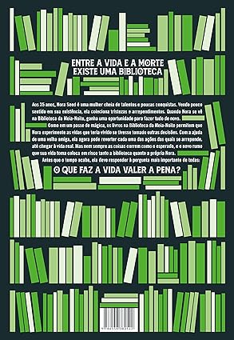

A Biblioteca da Meia Noite
Matt Haig
308 páginas
R$ 41,78
R$ 64,90
-35%
Sinopse
Aos 35 anos, Nora Seed é uma mulher cheia de talentos e poucas conquistas. Arrependida das escolhas que fez no passado, ela vive se perguntando o que poderia ter acontecido caso tivesse vivido de maneira diferente. Após ser demitida e seu gato ser atropelado, Nora vê pouco sentido em sua existência e decide colocar um ponto final em tudo. Porém, quando se vê na Biblioteca da Meia-Noite, Nora ganha uma oportunidade única de viver todas as vidas que poderia ter vivido.
Neste lugar entre a vida e a morte, e graças à ajuda de uma velha amiga, Nora pode, finalmente, se mudar para a Austrália, reatar relacionamentos antigos – ou começar outros –, ser uma estrela do rock, uma glaciologista, uma nadadora olímpica... enfim, as opções são infinitas. Mas será que alguma dessas outras vidas é realmente melhor do que a que ela já tem?